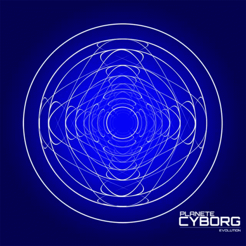

Claude Code를 켜고 “이 스펙대로 구현해줘”라고 입력한다.
에이전트는 잠깐 멈추더니 네 문서를 가져온다. HTML 파싱, 토큰 카운트. 그리고 조용히 버린다.
이유는 단순함. 문서가 너무 길었거나, robots.txt가 막았거나, 아니면 그냥 구조가 에이전트가 읽기 불편했거나.
네 애널리틱스엔 아무것도 안 잡힘. 스크롤 깊이 0, 체류 시간 0.4초, 링크 클릭 없음. 근데 에이전트는 분명히 거기 있었음.
이걸 Addy Osmani가 Agentic Engine Optimization(AEO) 이라고 부르기 시작했음.
AEO가 뭔데
SEO가 검색 크롤러를 위한 최적화였다면, AEO는 AI 에이전트를 위한 최적화임.
개념은 같은데 소비자가 다름. 검색엔진이 아니라 자율적으로 fetch하고, 파싱하고, 추론하는 AI 에이전트가 대상.
근데 에이전트가 문서 읽는 방식이 사람이랑 완전히 다름. 그게 문제의 시작.
사람 vs 에이전트, 문서 읽는 방식
사람 패턴:
홈에 들어와서 탐색하고, 헤딩 훑고, 코드 샘플 돌려보고, 링크 23개 따라가고, 48분 세션. 애널리틱스에 다 잡힘.
에이전트 패턴: HTTP GET 1~2번. 끝.
사람이 여러 페이지를 클릭하며 탐색하는 걸, 에이전트는 GET 요청 하나로 압축함. “유저 저니” 개념이 서버 이벤트 하나로 붕괴됨.
클라이언트 이벤트는 전부 무효화됨. 스크롤 깊이, 체류 시간, 버튼 클릭, 튜토리얼 완료 — 에이전트는 다 건너뜀.
에이전트 HTTP 핑거프린트도 구별 가능함:
| 에이전트 | 런타임 | 시그니처 |
|---|---|---|
| Claude Code | Node.js / Axios | axios/1.8.4 |
| Cline | curl | curl/8.4.0 |
| Cursor | Node.js / got | got (sindresorhus/got) |
| Windsurf | Go / Colly | colly |
| Aider | Headless Chromium | Full Mozilla UA |
서버 로그에 이미 AI 트래픽이 쌓이고 있을 가능성이 높음. 아직 세그먼트를 안 했을 뿐.
토큰 문제 — 문서가 길면 에이전트한테 투명인간
에이전트는 context window가 유한함. 보통 실용 한도 100K~200K 토큰.
근데 Cisco Firewall API 가이드 하나가 193,217 토큰임. 사실상 에이전트 context를 혼자 다 먹음.
문서가 너무 길면 에이전트가 하는 짓:
- 조용히 자름 → 중요한 정보 누락
- 아예 건너뜀 → 더 짧은 다른 문서 우선
- chunking 시도 → 지연 + 에러 증가
- 파라메트릭 지식으로 대체 → 환각
토큰 수가 사실상 문서의 1순위 메트릭이 된 거임.
실무 가이드라인:
- Getting started: 5,000 토큰 이하
- API 레퍼런스 한 섹션: 10,000~15,000 토큰
- 아키텍처 개요: 20,000~30,000 토큰
AEO 스택 — 6개 레이어
Layer 1 — robots.txt (기초 중의 기초)
에이전트가 처음 들르는 곳. 여기서 막히면 그냥 끝.
robots.txt가 AI 크롤러를 잘못 차단하면 에이전트는 아무 오류도 없이 네 문서에 접근 못 함. 팀이 전혀 모르는 상태로.
지금 당장 robots.txt 열어서 Anthropic, OpenAI, Google, Perplexity 크롤러 차단 여부부터 확인해야 함.
Layer 2 — llms.txt (에이전트용 사이트맵)
yourdomain.com/llms.txt에 놓는 Markdown 파일.
에이전트가 전체 사이트 크롤 없이 관련 문서를 찾을 수 있게 해주는 인덱스임. 페이지 이름만 있으면 안 됨 — 에이전트가 뭘 찾을 수 있는지 설명이 있어야 함.
# YourProduct 문서
## 시작하기
- [퀵스타트](/docs/quickstart): 5분 안에 첫 API 호출
- [인증](/docs/auth): OAuth 2.0 및 API 키 패턴
## API 레퍼런스
- [REST API](/docs/api): 기본 URL, 버전, 페이지네이션 (8K tokens)
- [유저 API](/docs/api/users): CRUD 작업 (12K tokens)핵심: 페이지명이 아니라 “이 페이지에서 뭘 할 수 있는지”를 써야 함. 토큰 수도 같이 적으면 에이전트가 context 계산할 수 있음.
Layer 3 — skill.md (기능 선언)
llms.txt가 “어디에 있는지”라면, skill.md는 “뭘 할 수 있는지”임.
에이전트가 API 문서를 다 읽지 않고도 이 서비스가 사용자 의도를 충족시킬 수 있는지 판단하게 해줌.
---
name: auth-service
description: 사용자 인증, OAuth 2.0, 세션 관리
---
## 할 수 있는 것
- OAuth 2.0으로 사용자 인증
- JWT 토큰 발급 및 검증
- SSO 연동 (SAML, OIDC)
## 제약
- 분당 1000 토큰 요청 한도
- Access token 1시간, Refresh token 30일이게 있으면 에이전트가 “이 API가 내 작업에 맞나?” 판단을 context 소비 전에 할 수 있음.
Layer 4 — 콘텐츠 포맷
- Markdown으로 제공 — HTML보다 토큰 오버헤드 훨씬 낮음.
.mdURL 파라미터로 접근 가능하게 - H1→H2→H3 계층 유지 — 건너뜀 없이
- 각 섹션 앞에 결과물 먼저 — 배경 설명 나중에
- 코드 예제는 설명 바로 다음에
- 파라미터 레퍼런스는 표로 — 산문보다 토큰 압축 좋음
- 첫 500 토큰에 핵심 3가지: 이게 뭔지, 뭘 할 수 있는지, 시작하려면 뭐가 필요한지
사이드바, 네비게이션, 푸터 링크 — 파싱 경로에서 전부 빼야 함.
Layer 5 — 토큰 수 노출
문서 페이지에 토큰 수를 직접 적음. llms.txt에도 같이.
에이전트가 스스로 계산하게 됨:
- “8K 토큰 — context에 그대로 넣을 수 있음”
- “150K 토큰 — 필요한 섹션만 fetch”
- “context 초과 — llms.txt 요약으로 대체”
구현은 간단함. 서버에서 글자수 세고 4로 나누면 대략적인 토큰 수. 이걸 meta 태그나 HTTP 헤더로 노출.
Layer 6 — “Copy for AI” 버튼
개발자가 AI 어시스턴트에 문서를 context로 넣을 때, 보통 렌더된 HTML을 복붙함. 네비, 푸터, 광고 다 포함된 상태로.
“Copy for AI” 버튼 하나로 clean Markdown을 클립보드에 복사하게 해주면, 에이전트가 받는 context 품질이 확 올라감.
Anthropic, Cloudflare가 이미 넣음. 구현 공수 낮고 효과 높음.
AGENTS.md — 레포지토리의 새 진입점
README.md가 사람 개발자의 진입점이었다면, AGENTS.md는 AI 에이전트의 진입점임.
에이전트가 프로젝트를 열면 루트의 AGENTS.md를 먼저 읽고 이후 모든 작업에 활용함.
좋은 AGENTS.md에 들어가는 것:
- 프로젝트 구조 + 핵심 파일 위치
- 관련 API/서비스 문서 직링크
- 개발 샌드박스 및 테스트 환경
- 에이전트가 알아야 할 rate limit
- 코드베이스 패턴/컨벤션
- MCP 서버 링크 (있다면)
Cisco DevNet이 이미 GitHub 템플릿에 AGENTS.md를 기본 포함시킴.
AI 트래픽 모니터링
지금 당장 할 수 있는 것 하나 — AI 리퍼럴 트래픽 세그먼트.
모니터링할 리퍼럴:
labs.perplexity.ai
chatgpt.com
claude.ai
copilot.microsoft.com
gemini.google.com
서버 로그에서 axios/1.8.4, curl/8.4.0, got, colly 같은 에이전트 핑거프린트도 함께 추적.
이게 있어야 AEO 작업이 실제로 효과 있는지 데이터로 확인 가능함.
AEO 감사 체크리스트
발견성
- 루트에 llms.txt 존재
- robots.txt — AI 에이전트 차단 없음
- 코드 레포에 AGENTS.md 존재
콘텐츠 구조
- Markdown 버전 접근 가능 (
.mdURL) - 페이지 첫 200단어에 결과물 서술
- 헤딩 계층 일관성
- 코드 예제가 설명 바로 다음에 위치
- 파라미터 레퍼런스를 표로 작성
토큰 경제
- 페이지별 토큰 수 추적
- 단일 페이지 30,000 토큰 초과 없음
- llms.txt에 핵심 페이지 토큰 수 기재
기능 시그널링
- skill.md — 각 서비스/API 기능 선언
- skill.md에 기능, 필요 입력값, 제약 포함
애널리틱스
- 웹 애널리틱스에 AI 리퍼럴 세그먼트
- 서버 로그에 에이전트 HTTP 핑거프린트 모니터링
UX 브릿지
- “Copy for AI” 버튼 있음
- URL 컨벤션으로 Markdown 소스 접근 가능
어디서 시작할까
우선순위 순서:
- robots.txt 감사 — 10분, AI 차단 방지
- llms.txt 추가 — 몇 시간, 발견성 즉시 개선
- 토큰 수 측정/노출 — 주말 프로젝트, 레버리지 높음
- 주요 API 3개 skill.md 작성 — 에이전트가 가장 자주 찾는 것부터
- “Copy for AI” 버튼 — 공수 낮음
- AI 트래픽 모니터링 세팅 — 나머지를 정당화할 데이터
SEO가 가르쳐준 건 이거임. 좋은 콘텐츠만으론 부족함. 실제 트래픽 패턴에 맞게 발견 가능하게 만들어야 함.
AI 코딩 에이전트는 이미 문서 트래픽의 상당 부분을 차지하고 있음. 그리고 대부분의 개발자 포털은 아직 이걸 위해 만들어지지 않았음.
에이전트한테 잘 읽히는 문서가 사람한테도 더 잘 읽힘. 두 방향이 엇갈리는 게 아니라 겹침.
llms.txt부터 시작하면 됨.
참고: Agentic Engine Optimization — Addy Osmani
FAQ
Q. AEO와 SEO의 차이는? SEO는 검색 크롤러와 사람 클릭 패턴을 위한 최적화. AEO는 AI 에이전트가 콘텐츠를 파싱하고 추론하는 방식을 위한 최적화임. 소비자가 다를 뿐 원리는 같음.
Q. llms.txt는 어떻게 만드나?
루트 도메인에 /llms.txt 파일 놓으면 됨. Markdown 형식. 페이지 이름 + “이 페이지에서 뭘 할 수 있는지” 설명 + 토큰 수 포함하면 됨.
Q. 내 사이트에 AI 트래픽이 있는지 어떻게 확인하나?
서버 로그에서 axios/1.8.4, curl/8.4.0, got, colly 같은 User-Agent와 claude.ai, chatgpt.com 같은 리퍼럴을 찾으면 됨. 이미 상당량이 쌓여 있을 가능성이 높음.
Q. skill.md 형식 표준이 있나? 아직 완전한 표준은 없음. Addy Osmani가 제시한 포맷(name, description, capabilities, required inputs, constraints, key docs)이 실용적 기준으로 쓰임.